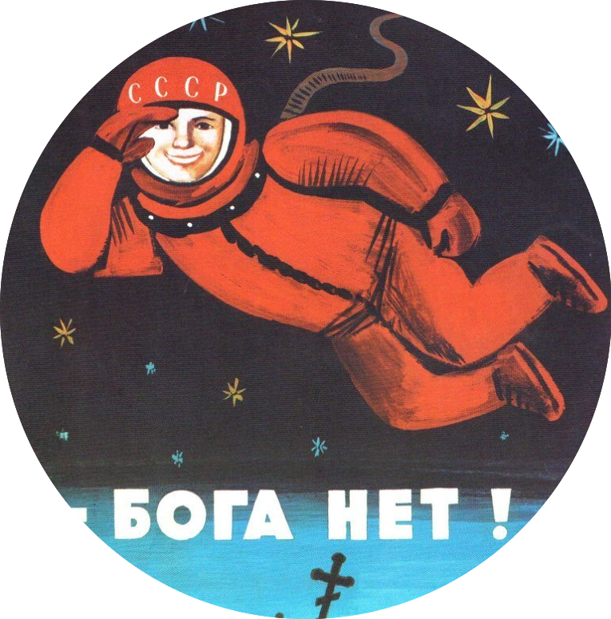

- sas@utmn.ru
- +7 911 11 11 11
Школа перспективных исследований запускает программу открытых лекций.
Пройди наш тест и получи рекомендацию экспертов о том, какой киношедевр тебе подходит
Выбери по два курса из каждого списка:
- 
«Царский недуг»: депрессия в литературе. Джон Тангни
Топ лучших способов потери смысла жизни по версии мировой литературы.
«Эпоха тотальной войны» – глобальный конфликт в коротком 20-м веке. Томаш Блушевич
Чем мировая война отличается от обычной? И когда начнется третья?
Введение в исследования компьютерных игр. Максим Алюков
Компьютерные игры: насилие, сексуальность, идентичность, образование, экономика, политика.
Воспоминания, сновидения, исповеди: изображая внутренний мир. Джон Тангни
Время и память, смерть и трансцендентность, психиатрическая больница и храм. Путешествие по невероятным биографиям внутренней жизни.
История и память через призму кино. Евгений Гришин
История vs. историческая память. Ключевые проблемы российской истории через призму популярных фильмов.
История кино. Оксана Булгакова
Вторая звуковая революция, голливудские студии, нуар, авторское кино и глобализация.
Выбери по два курса из каждого списка:
Международное право. Сурендра Бхандари
Как страны взаимодействуют друг с другом, со своими гражданами и гражданами других государств? Суверенитет, государственный иммунитет и права человека.
Наука и религия: конфликт неизбежен?
В чем сходства и отличия научного и религиозного знания? Интерпретации Библии, несоизмеримые теории, противоречия и гармония.
Ницше: по ту сторону добра и зла и смерть бога. Закари Рейна
Смерть бога, воля к истине, вечное возвращение и сверхчеловек: переоценка всех ценностей у Ницше.
Политическая коммуникация. Максим Алюков
Как устроены медиа и как они связаны с политическими элитами? Как телевидение, интернет и социальные сети формируют мнения и влияют на принятие решений?
Почему мы верим? Наталья Савельева
Почему мы верим или не верим пропаганде? Почему атрибутируем те или иные значения и смыслы различным вещам и событиям нашей жизни?
Право и любовь. Закари Рейна
Каковы отношения между правом и любовью? Каково место любви в праве и место права в любви? Можем ли право быть похожим на любовь?
Выбери по два курса из каждого списка:
Публичная сфера и частная жизнь. Олег Журавлев
Соотношение публичного и частного, коллективного и индивидуального, политического и личного в человеческой жизни.
Современная философия науки. Луи Вервурт
Что такое наука и какова её цель? Как доказываются научные утверждения и делаются открытия? Какие степени истинности существуют в разных науках?
Создание Европы: средневековая культура в VI-XVI вв. Питер Джонс
Радикальная культура средневековой Европы: трубадуры с песнями о куртуазной любви, появление и исчезновение королевств, Крестовые походы и первые университеты.
Создание экономического общества. Анил Аба
Как возникла экономическая реальность, в которой мы живем? Капитализм, экономическое развитие, кризисы, бедность и глобальное неравенство – что дальше?
Философия физики, или Как изобрести новую науку. Луи Вервурт
Философские предположения, лежащие в основе таких великих теорий, как классическая механика, теория относительности и квантовая механика.
Экология, технологии и аниме. Даскин Драм
Изменения климата, генная инженерия, киборгизация, биоэтика и вымирание. Изучение этих и других проблем на материале японского аниме и манги.
Ваш результат:
"К северу через северо-запад", Альфред Хичкок
Приключенческо-шпионский триллер 1959 года, по стилистике предвосхищающий фильмы «бондианы»
"К северу через северо-запад", Альфред Хичкок
Приключенческо-шпионский триллер 1959 года, по стилистике предвосхищающий фильмы «бондианы»
Поделиться:
Вступай в нашу группу в ВК и узнавай первым о предстоящих лекциях: